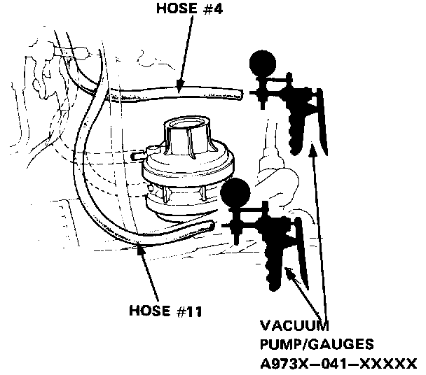
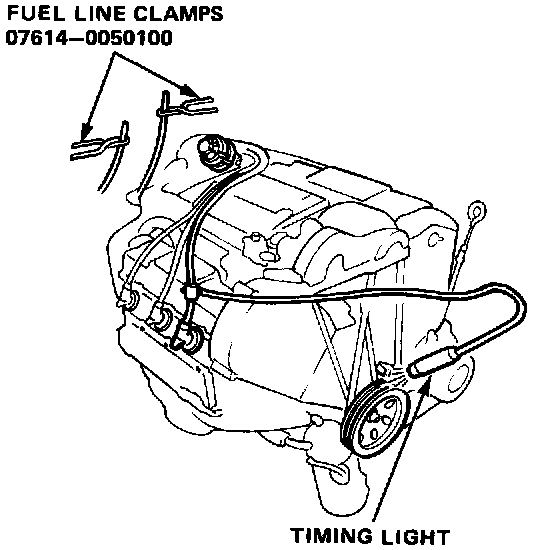
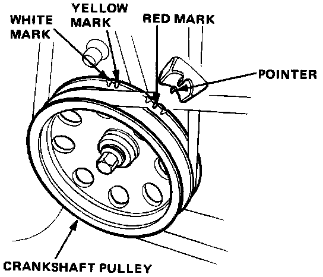
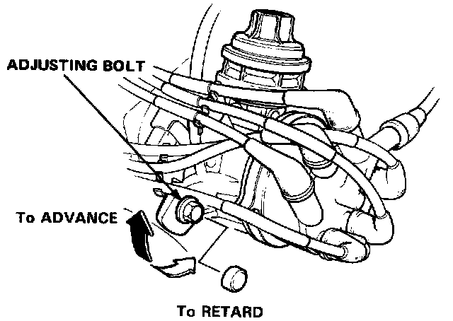

Sedan
Ignition Timing Inspection and Adjustment1. Start the engine and allow it to warm up (cooling fan comes on).

2. Disconnect the vacuum hoses from the vacuum advance diaphragm and, while the engine idles, check each hose for vacuum.
The #4 and #11 hoses should have vacuum.
- If the #11 hose has no vacuum, go to Test I of the solenoid valve A.
- If the #4 hose has no vacuum, go to Test I of the solenoid valve B.

3. Disconnect the vacuum hoses from the vacuum advance diaphragm and pinch the end of the hoses using fuel line clamps, 07614-0050100.
4. Connect a timing light to the engine; while the engine idles, point the light toward the pointer on the timing belt cover.

5. Adjust initial timing, if necessary, to the following specifications:
Ignition Timing
Manual Transmission:
3°BTDC(YELLOW) at 720 ± 50 rpm in neutral
Automatic Transmission:
3°BTDC(YELLOW) at 720 ± 50 rpm in neutral

6. Adjust as necessary by loosening the distributor adjusting bolt, and turn the distributor housing counterclockwise to retard the timing, or clockwise to advance the timing.
7. Tighten the adjusting bolt, recheck the timing.
8. Connect the vacuum hoses to the vacuum advance diaphragm and inspect ignition timing at idle.
Ignition Timing
Manual Transmission:
23 ± 2°BTDC(RED) at idle
Automatic Transmission:
18 ± 2°BTCD(RED) at idle
- If advance is not as specified, check the advance diaphragm and distributor advance mechanism.
9. Disconnect the #11 hose from the advance diaphragm and connect a vacuum pump/gauge to the #11 hose.
10. Disconnect the #5 hose from the intake manifold and plug it then check the #11 hose for vacuum at idle.
The #11 hose should have vacuum.
- If the hose has no vacuum, go to Test I of the solenoid valve A.
11. Rapidly open and release the throttle.
The vacuum should go to 0.
- If the vacuum is not specified, go to Test II of the solenoid valve A.
12. Re-connect the #5 hose to the intake manifold and keep the vacuum in the reservoir with the engine idled.
13. Re-connect the #11 hose to the advance diaphragm, and disconnect the #4 hose from the diaphragm, then connect the vacuum pump/gauge to the #4 hose.
14. Leaving the #5 hose disconnected, check the #4 hose for vacuum at idle.
The #4 hose should have vacuum.
- If the hose has no vacuum, go to Test I of the solenoid valve B.
15. On automatic transmission, rapidly open and release the throttle.
On manual transmission, raise the engine speed to 3,500 rpm.
The vacuum should go to 0.
- If the vacuum is not specified, go to Test II of the solenoid valve B.